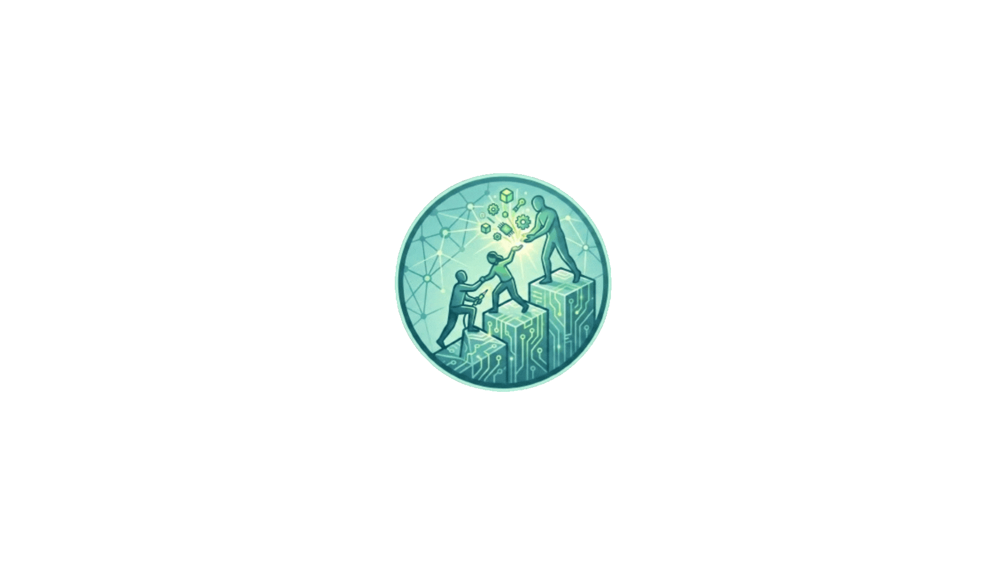

Andrea Cerioli
Animatore Digitale · Sacra Famiglia
Avviso
Il portale è disponibile
in orario scolastico
Per favorire un uso consapevole degli strumenti digitali, l'accesso alle risorse è attivo solo durante le ore di lezione.
Lunedì – Venerdì
8:00 – 16:00
Chiusura estiva
5 giu – 13 set